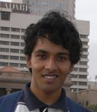

|
Mihir
Mehta |
|
|
 |
Resume | About Me | Academic Interests | Internship | Projects | Technical Skills | Courses
I am a software developer in the Systems Core Group at the Samsung Research Institute, Noida. I graduated in 2013 from the Department of Computer Science and Engineering at the Indian Institute of Technology, Delhi, India.
Automata Theory
Programming Languages
Operating Systems
My current employment has a strong focus on operating systems (mainly Linux), in the context of phones running the Android operating system.
Internship at Mygola Technologies, May-July 2012
I worked at Mygola Technologies, a web start-up in the domain of
online travel planning, in the summer of 2012. My
project was Tweetola, which is a web application helping
e-commerce merchants contact Twitter users on the basis of tweets
with commercial intent. Using the Twitter API for accessing public
tweets in real time, I developed this application using techniques
such as keyword filtering and blacklisting to find relevant tweets
for each marketer.
Intensional Programming in the Spreadsheet(May
2011 - July 2011)
Prof. Sanjiva Prasad,
CSE, IITD
I worked with Prof. Sanjiva Prasad and Ramanshu Mahaur to
build a general programming language based on computations as
spreadsheet rules. We were able to implement the project
using Perl syntax for the language and GTK+ 2.0 for the
spreadsheet interface, and also design a game programming
environment (using OpenGL) as a proof of concept.
PintOS Development(January 2012 - April 2012):
Course Project for Operating Systems
PintOS is an instructional operating system for programming
assignments in operating systems courses, designed as a
minimalistic version of Linux. In the course of this project,
I implemented functionality for system calls, loading and
execution of userspace executables, virtual memory, and
persistent file systems.
Spatial Search in NaPTAN (January 2012 - April 2012) :
Course Project for Database Systems
Designed a web app for users to plot their location (using
the Google Maps API) and query for public transport
access nodes in the vicinity. The NaPTAN database of
public transport access nodes in the UK was the dataset.
The PostgreSQL relational database, and its spatial
database extension PostGIS were used as the database back end.
Programming Competition Management System (October 2011 - December 2011) :
Course Project for Software Engineering
Developed an automated judging system for online
programming contests, modeled as tournament-style matches
between pairs of programs playing a 2-player
game. Implemented this using the Apache Tomcat server and
Java's on-the-fly compilation features.
ML interpreter (January 2011 - April 2011):
Course
Project for Programming Languages
Designed and implemented an interpreter for a
Turing-complete subset of the Standard ML language. This
interpreter had both eager (SECD machine) and lazy (Krivine
machine) strategies for evaluation of expression, on top of a
common framework for scanning and parsing into an abstract
syntax tree.
MIPS emulator (August 2010 - November 2010) :
Course
project for Computer Architecture
Implemented an emulator for a significant subset of the MIPS
architecture with an arithmetic unit and a register file.
Augmented this with pipelining and validated it using a
non-trivial MIPS assembly program.
Programming Languages : Imperative languages (C, Python, Java), functional languages (OCaml, SML), scripting languages (Perl, Python), database interaction languages (SQL) and declarative languages (Prolog).
DataBases : PostgreSQL, MySQL
Operating Systems : Linux (application AND kernel development experience)
Others : LLVM, OpenGL, GTK+ 2.0 and 3.0, Xilinx, Qemu and Bochs.
Computer Science:
Introduction to Computers and Programming
Introduction to Computer Science and Engineering
Data Structures
Discrete Mathematical Structures
Computer Architecture
Design Practices in Computer Science
Programming Languages
Digital Hardware Design
Computer Networks
Introduction to Database systems
Operating Systems
Theory of Computation
Analysis and Design of Algorithms
Compiler Design
Professional Practices
Electrical Engineering:
Fundamentals of Electrical Engineering
Digital Electronics
Digital Electronics Laboratory
Signals and Systems
Mathematics:
Introduction to Analysis and Differential Equations
Introduction to Algebra and Matrix Analysis
Numerical Optimisation
Probability and Stochastic Processes
Statistical Methods and Algorithms
Other Departments:
Fields and Waves
Physics Laboratory
Engineering Graphics
Physical Chemistry Concepts and Applications
Chemistry Laboratory
Manufacturing Practices
Engineering Mechanics
Physics of Materials
Optics
Bioinformatics
Energy, Ecology, and Environment
Humanities Department:
Introduction to Literature
Introduction to Drama
Micro economics
Scholastic Achievements:
Secured All India Rank 138 in JEE 2009.
Secured All India Rank 29 in AIEEE 2008.
Site last updated: January 18 2014
© Mihir Mehta, 2014
The template has been "inherited"
from Swapnil Jain